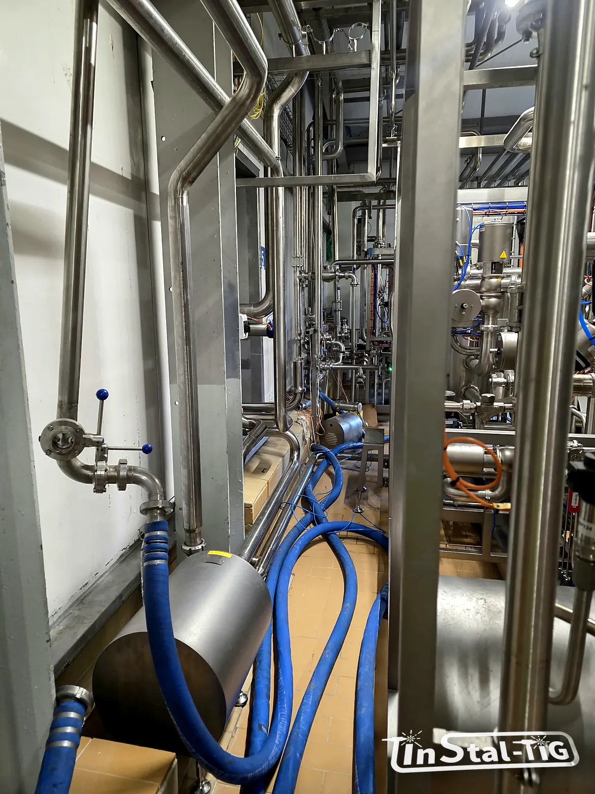

Korozja stali nierdzewnej: skąd się bierze rdza na „nierdzewce”

„Kupiliśmy nierdzewkę, a po pół roku są rude zacieki”. To jedna z częstszych skarg, z jakimi spotyka się każdy, kto pracuje ze stalą nierdzewną. Stal nierdzewna może korodować, tylko robi to z określonych powodów. Gdy się je zna, można ich uniknąć już przy projekcie, wykonaniu i myciu instalacji.
Dlaczego nierdzewka w ogóle jest nierdzewna?
Stal nierdzewna zawiera co najmniej ok. 10,5% chromu. Chrom tworzy na powierzchni bardzo cienką, niewidoczną warstwę pasywną z tlenków, która oddziela stal od otoczenia. Gdy warstwa zostanie uszkodzona, w kontakcie z tlenem z powietrza lub wody sama się odbudowuje.
Korozja zaczyna się wtedy, gdy warstwa pasywna zostanie uszkodzona szybciej, niż zdąży się odbudować, albo gdy w ogóle nie może powstać. Poniżej najczęstsze przyczyny.
1. Obce żelazo na powierzchni
To najczęstsza przyczyna rudych nalotów, zwłaszcza na nowych instalacjach. Rdzewieje wtedy nie sama nierdzewka, tylko drobiny zwykłej stali, które się na niej osadziły:
- iskry i pył ze szlifowania lub cięcia stali czarnej w pobliżu,
- narzędzia, tarcze i szczotki wcześniej używane do stali węglowej,
- składowanie i transport na stalowych stojakach lub w zawiesiach bez przekładek,
- wióry z wiercenia otworów w konstrukcjach obok.
Taki nalot zwykle da się zetrzeć, ale w wilgotnym środowisku z czasem może uszkodzić powierzchnię pod spodem. Zapobiega się temu, oddzielając narzędzia i stanowiska do nierdzewki, a usuwa się go trawieniem i pasywacją (więcej w artykule o pasywacji i trawieniu).
2. Przebarwienia po spawaniu
Kolorowe naloty przy spoinie (od słomkowego po granatowy) to tlenki powstałe w wysokiej temperaturze. Pod nimi warstwa stali jest zubożona w chrom, więc odporność na korozję jest tam niższa. Dlatego ważne są osłona gazowa i formowanie grani, a tam, gdzie przebarwienia jednak powstaną, ich usunięcie. Pisaliśmy o tym w tekście o spawaniu TIG i formowaniu grani.
3. Chlorki: korozja wżerowa i szczelinowa
Chlorki (sól, solanki, część środków myjących i dezynfekujących, niektóre wody) potrafią miejscowo przebić warstwę pasywną. Powstają wtedy wżery: małe, głębokie otwory, często z rudym zaciekiem wokół. Ryzyko rośnie z temperaturą i stężeniem chlorków.
Podobnie działa korozja szczelinowa: w wąskich szczelinach (pod uszczelką, w zakładce blach, pod osadem) brakuje tlenu do odbudowy warstwy pasywnej, a chlorki się zatężają. Dlatego w instalacjach higienicznych unika się szczelin i martwych stref (zobacz Martwe strefy w rurociągach: zasada 3D).
Lepszą odporność na chlorki daje molibden, dlatego w takich warunkach stosuje się zwykle 316L zamiast 304 (porównanie w artykule Stal 304 czy 316L?).
4. Korozja naprężeniowa
Stale austenityczne, takie jak 304 i 316L, mogą pękać pod wspólnym działaniem trzech czynników: chlorków, naprężeń rozciągających (np. od spawania, gięcia, montażu na siłę) i podwyższonej temperatury, zwykle powyżej ok. 50–60 °C. Pęknięcia są cienkie i rozgałęzione, często niewidoczne do chwili wycieku. Przy gorących mediach z chlorkami trzeba to brać pod uwagę już przy doborze materiału.
5. Korozja międzykrystaliczna
Gdy stal długo przebywa w zakresie temperatur ok. 450–850 °C (np. w strefie wpływu ciepła przy spawaniu), węgiel wiąże chrom w węgliki na granicach ziaren. Wzdłuż nich odporność spada i stal może korodować „od środka”. Ryzyko zmniejszają gatunki niskowęglowe (litera „L”, np. 316L) i rozsądne ilości ciepła wprowadzane przy spawaniu.
6. Kontakt z innymi metalami i niewłaściwe mycie
- Korozja galwaniczna: gdy nierdzewka styka się ze stalą węglową lub aluminium w obecności wilgoci, zwykle szybciej koroduje ten drugi metal. Połączenia różnych metali warto izolować.
- Agresywna chemia: środki na bazie chloru, kwas solny czy zbyt wysokie stężenia i temperatury mogą uszkadzać warstwę pasywną. Ważne jest stosowanie się do zaleceń producenta chemii i dokładne spłukiwanie.
- Stojąca woda i osady: pod osadem i w miejscach, gdzie woda nie odpływa, łatwiej o korozję szczelinową. Pomaga dobry spadek i skuteczne mycie (więcej w tekście o myciu CIP).
Warto wiedzieć: pierwszy prosty test to przetarcie rudego miejsca. Jeśli nalot schodzi, a pod spodem jest gładka stal, najpewniej to obce żelazo albo osad. Jeśli pod spodem widać drobne otworki, to wżery i trzeba szukać przyczyny w chlorkach lub warunkach pracy. Obecność wolnego żelaza na powierzchni można potwierdzić np. testem ferroksylowym.
Jak się chronić?
- dobierać gatunek stali do medium, temperatury i chemii myjącej,
- spawać z osłoną gazową i formowaniem grani, usuwać przebarwienia,
- nie mieszać narzędzi i stanowisk do stali czarnej i nierdzewnej,
- projektować bez szczelin, martwych stref i miejsc, gdzie stoi woda,
- myć zgodnie z zaleceniami producenta chemii i dobrze spłukiwać.
Jeśli w Twojej instalacji pojawiły się rude zacieki, prześlij zdjęcia i opis warunków pracy przez formularz Wycena online.
Rdza na instalacji ze stali nierdzewnej?
Zadzwoń albo napisz. Opisz, co płynie w rurach, jak je myjecie i gdzie pojawiła się korozja, a doradzimy, co dalej, i przygotujemy wycenę.
Zadzwoń: 667 466 431 Napisz e-mail Wycena online